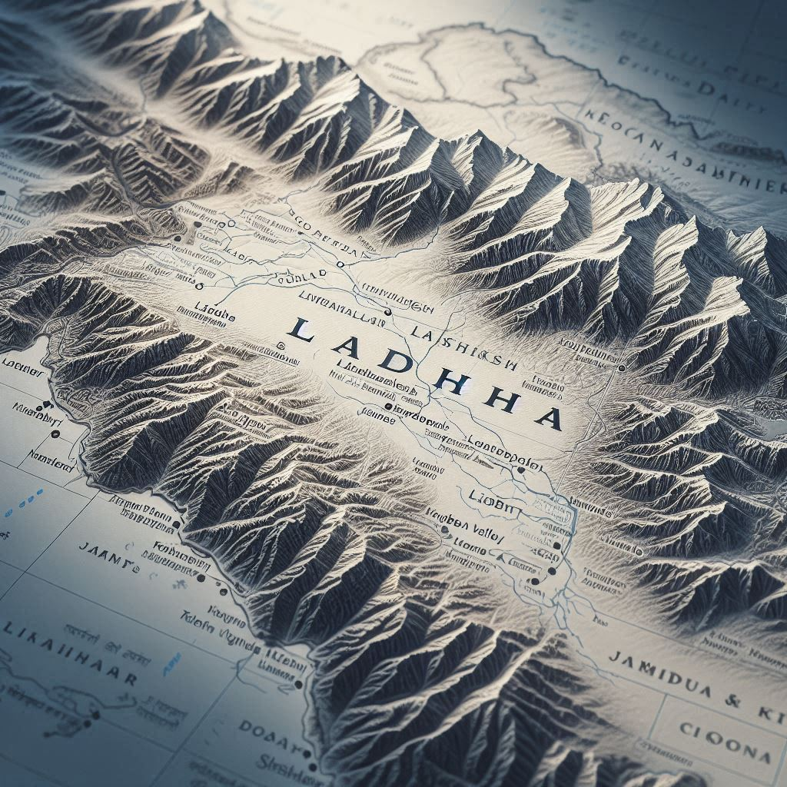
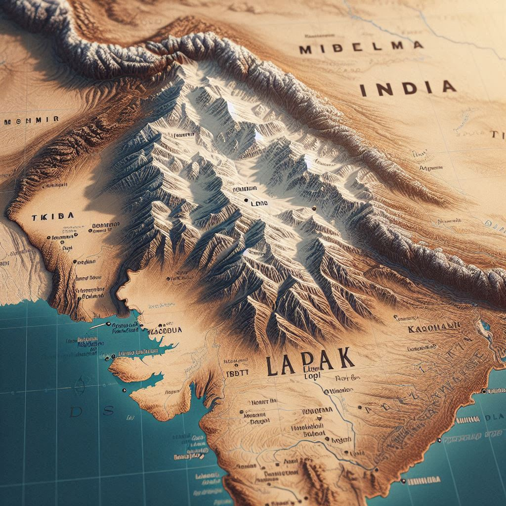

Ladakh is a high-altitude region located in the northernmost part of India, in the state of Jammu and Kashmir. It is bordered by China (Tibet) to the east, Pakistan to the west, and the Indian states of Himachal Pradesh and Punjab to the south. The region lies in the rain shadow of the mighty Himalayas, which makes it a desert-like area, characterized by rugged mountains, deep valleys, and a cold desert climate.
Key Geographic Features:
- Mountains: Ladakh is known for its dramatic mountain ranges, including the Zanskar Range, Ladakh Range, and Himalayas. The region is home to some of the world's highest motorable roads, such as the Khardung La Pass.
- Plateau: Ladakh is a high-altitude plateau, with much of the region situated at elevations of around 3,000 meters (9,800 feet) to 5,000 meters (16,400 feet) above sea level.
- Rivers: The Indus River is the main river that flows through Ladakh, with several tributaries, such as the Zanskar River, providing water to the region. These rivers flow from the glaciers of the Himalayas and the Karakoram Range.
- Lakes: Ladakh has several beautiful lakes, many of which are situated at high altitudes. Some notable lakes include:
- Pangong Lake: A saltwater lake that stretches across the India-China border.
- Tso Moriri: A freshwater lake surrounded by snow-capped peaks and wildlife sanctuaries.
- Climate: The climate of Ladakh is a cold desert, with extreme temperatures. Winters are harsh, with temperatures often dropping as low as -20°C (-4°F), while summers are short and pleasant, with daytime temperatures reaching up to 30°C (86°F). Due to the high altitude, the air is thin and the region experiences a lot of sunshine, even during the colder months.


Borders:
- To the north: Ladakh shares a border with China (Tibet Autonomous Region).
- To the west: It shares a boundary with Pakistan-administered Gilgit-Baltistan and Kashmir.
- To the south: Ladakh is bordered by the Indian states of Himachal Pradesh and Punjab.
- To the east: Ladakh shares a boundary with the Tibet Autonomous Region of China.
Conclusion:
This geographical location, nestled between towering mountain ranges, makes Ladakh a land of rugged beauty, isolated from much of the rest of India, with a unique ecosystem and culture.